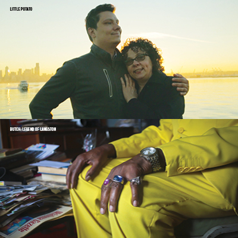
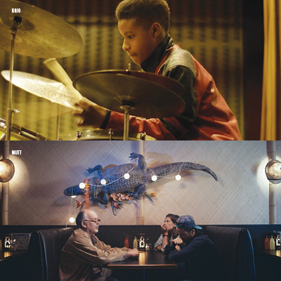
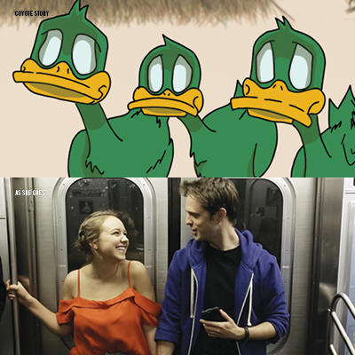
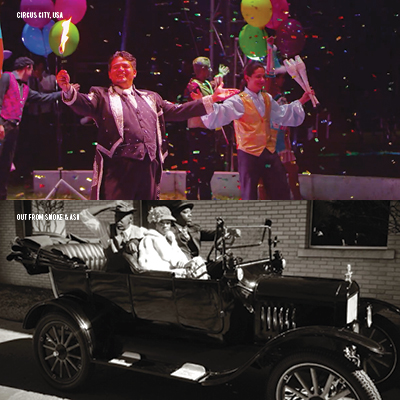

Close up
Your guide to the 2017 Tulsa American Film Festival

Inside Circle Cinema at TAFF 2016
Sarah Eliza Photography
Back for its third year, the Tulsa American Film Festival has an exciting and eclectic roster of short and feature length films, both professional and student-made, as well as a selection of industry panels, educational lectures, awards, and after-parties to lubricate the cogs of Tulsa’s filmmaking community.
In fact, it’s already begun.
“We keep telling ourselves we’re going to keep it simple and we’re not going to have a bigger program. But … okay, we’re going to do five different events before the festival,” said TAFF Director of Programming Colleen Thurston.
The series of special screenings, which began in September and continues through the festival includes a Will Sampson retrospective, a book discussion and screening of “High Noon,” and the Tulsa premiere of James Payne’s delightful, East meets Western documentary about country music in Japan, “Far Western.”
“There’s an expectation once you do a show, and we put more pressure on ourselves every year,” said Ben Arredondo, the festival’s founder.
Other highlights include discussions with Tricia Wood, casting director of “La La Land,” and Tulsa native Doug Claybourne, who produced films for Coppola and Wes Craven, among others.
“We haven’t had industry folks of that caliber here,” Thurston said.
TAFF Production Director Adam O’Connor agreed.
“What’s different in this third year is we’re starting be the ones who are making the connections between the audience and established, or emerging, filmmakers—whereas before we were just getting connected,” he said.
Given their passion, it seems clear they’ll stay that way.
The Tulsa American Film Festival runs October 11 through October 15. All events are ticketed unless noted on this schedule as free. For tickets and more information: tulsaamericanfilmfest.com
Wednesday, October 11
TAFF Reception & Nathan Young Exhibit: Infinite Peyote Road
5:00 P.M.–7:30 | Circle Cinema, 10 S. Lewis Ave. | FREE
Tulsa Artist Fellow Nathan Young’s latest exhibit, “Infinite Peyote Road,” opens October 11 to kick off the Tulsa American Film Festival.
The work explores the images, symbols, sounds, and language of peyote ritual in the Native American Church, along with concepts linking to his personal experiences growing up in and around the church.
“It’s multimedia,” Young said. “There’s sound, there is looping video, and there are photos. A lot of the photos are found stuff. There’s a looping video of a Native American Church singers, slowed down to a crawl. There’s a white wall, so every night they’re going to project the sound, my installation, these really slow-moving practice videos. There are three, like a triptych.”
The sound accompanying the installation is peyote music from the Native American Church with added sonic layers.
“I take [the singers’ music] and use it to make texture, but I make it like drones, like Popol Vuh, like Werner Herzog-type soundtracks. An ethereal, droney music.”
The show is also a nod to Harry Smith, who documented the music of the Kiowa peyote meeting for the seminal Anthology of American Folk Music on Folkways Records, which led to a greater awareness of the music.
“[Smith] was proto-beat. That anthology changed the world, in a weird way. To me, he was that missing link between all my other interests and that world. Allen Ginsburg, William Burroughs, he was super close to those guys. He’s a big inspiration.”
—Brady Whisenhunt
Narrative & Documentary Short Films
7:45 P.M.–9:45 | Circle Cinema
Little Potato
Documentary | Directed by Wes Hurley
Wes Hurley’s autobiographical journey of growing up gay in the Soviet Union before and after the fall of communism, and how life changed with his eventual immigration to America.
Butch: Legend of Langston
Documentary | Directed by David Tester and Christopher Hunt
Set in Langston University, the nation’s westernmost HBCU (historically black college or university), this film explores the many myths, stories, and legends of a man who has lived on campus since 1961.
The Bulleteers
Narrative | Directed by Kyle Roberts
When a quirky but deadly outlaw returns to town, it’s up to a masked hero to gather a group of misfits to save the townspeople from the wrath of Todd.
 Lunch Ladies
Lunch Ladies
Narrative | Directed by J.M. Logan
Two burnt out high school lunch ladies do whatever it bloody takes on their quest to become Johnny Depp’s personal chefs.
Estrella
Narrative | Directed by Brandon Hugo Arroyo
A daughter learns to love the creativity her mother left behind.
U R a Dial Tone
Narrative | Directed by Lauren Kinsler
Sylvia loves her job as a sign language interpreter who makes phone calls for deaf people. Sure, sometimes she gets too emotionally involved and then a computer glitch sucks her into her callers’ lives, but who hasn’t that happened to?
Tyler
Narrative | Directed by Andy Koeger and Dan Frantz
A young woman in present-day New Orleans undergoes an unusual physical transformation.
 Pork.0
Pork.0
Documentary | Directed by Brett Kuxhausen
Carl Blake is on a quest: to breed the perfect pig and turn the American pork system on its heels by producing some of the tastiest and happiest pigs in the country.
Opening Feature Film & Short
8:00 P.M.–10:00 | Circle Cinema
Spaceman
Narrative Short | Directed by Christopher Oliva
A young man with big aspirations sets out on a curious path to realize his dream of becoming an astronaut.
Mickey Reece’s Alien
Narrative Feature | Directed by Mickey Reece
I don’t know a ton about Elvis. I don’t know if he had a twin brother who took over for him after the real Elvis burned out and decided to pull a Jim Morrison. I don’t know if his relationship with his wife Priscilla was a caricature twisted by the artifice that comes with being an idol. I’ve never eaten a peanut butter and banana sandwich. I just know Elvis through the inevitable osmosis that comes with being a 20th Century kid. The King.
Norman-based filmmaker Mickey Reece has his own take on the subject. Spoiler alert: it’s weird.
In a dreamscape somewhere in the ‘60s, Elvis (Jacob Snovel) is experiencing a cosmic malaise. The King is blocked—and asking existential questions, trying to bridge the gulf between his morose, childless wife Priscilla (Cate Jones), his bandmates and peers, and his managers, Joe (Alex Sanchez) and Colonel Parker (John Scamehorn)—all of whom want him to get back on the horse. The King is dealing with anxieties bestowed by a seemingly indifferent universe.
Unless there are aliens. Of which the King might be one. Like Jesus.
“Mickey Reece’s Alien” is a mocu-dramedy, striking a strange tonal balance that improbably works. This is partially because Reece’s stream-of-consciousness narrative sensibilities are compelling, baffling, and inherently funny. At its best it feels like an astute concoction of mumblecore David Lynch, injected with an off-kilter Linklater sensibility, like “Waking Life,” and a hint of the Coen’s tendency for oddly-timed laughs from oddball characters who seem larger-than-life. The combination is satisfying.
As Elvis, Snovel is somewhat adopting Cage’s version of him from “Wild at Heart.” Sanchez, in addition to John Selvidge (as Tom Jones) and Tennille McCallister turn in game performances. Cate Jones’s turn as Priscilla—basically a goth incarnation meant to comment on her solitude in their marriage—and her one-note, leaden delivery (purposeful or not) was an odd choice in a film already precariously juggling tones.
Infused with vibrant score by Nicholas Poss, and flat out gorgeous black-and-white cinematography by Joe Cappa (HBO’s “The Night Of…”) “Alien” is nothing if easy on the eyes. Reece moves his camera with delicacy, and composes with a sense of assurance that bridges the gap between low-budget indie quirk and the cinematic integrity of Cappa’s Robby Müller-esque lensing.
“Mickey Reece’s Alien” is like being in its director’s head. And that’s a good place to be.
—Joe O’Shansky
TAFF Opening Night After-Party, Featuring Paul Benjaman
9:00 P.M.–12:00 A.M. | Heirloom Rustic Ales Brewery, 2113 E. Admiral Blvd. | Free | Cash Bar
A live musical tribute to complement the Sunday screening of the documentary “Mad Dogs & Englishmen,” in which Leon Russell performed alongside Joe Cocker in his 1971 American tour. This evening also features Tulsan Paul Benjaman leading a band of Okies in their iterations of the songs from the film. Expect the classics, stay for the surprises.
Thursday, October 12
Short Film Screenplay Readings & Luncheon
12:00 P.M.–2:00 | Circle Cinema | Free
Directed by Rena Cook
Rena Cook directs local Tulsa actors in a live reading of TAFF’S three short film screenplay finalists: “4 Minutes of Truth,” written by Ted Satterfield; “The Last Slice of Pie,” written by Lesley Cessna-Kontowicz; “Yes And,” written by Adrienne Dawes.
Conversation with Doug Claybourne
6:30 P.M.–8:00 | Woody Guthrie Center, 102 E. Mathew B. Brady St. | Free
Film producer, poet, painter, Tulsan, and University of Tulsa graduate Doug Claybourne will touch on the high points of his career including working on “Apocalypse Now,” “The Black Stallion,” “The Escape Artist,” “The Black Stallion Returns,” “Peggy Sue Got Married,” “War of the Roses,” “Hearts of Darkness: A Filmmaker’s Apocalypse,” “The Mask of Zorro,” “Jack,” “Nights of Rodanthe,” “North Country,” and “Rumble Fish.” Claybourne will focus on his experience filming “Rumble Fish,” 35 years ago in Tulsa. Moderated by Tava Maloy Sofsky (director, OF + MO).
Narrative Feature Film & Short
7:00 P.M.–9:00 | Circle Cinema
 Jessica
Jessica
Narrative Short | Directed by Jessica Kingdon
Two women who share a name and appearance meet when one hires the other to clean her house.
Palacios
Narrative Feature | Directed by Robert T. Herrera
Eugene, an inner-city teen, escapes the streets and hides on a rooftop on the 4th of July. There, he meets Holly, a young widow. The unlikely companions commit to spending the day together above the city.
Documentary Feature Film
8:30 P.M.–10:30 | Circle Cinema
Olancho
Directed by Christopher Valdes and Ted Griswold
Manuel, a farmer from Olancho, Honduras, seeks fame by making music for the region’s drug cartels. When some of his song lyrics get him in trouble, Manuel must make the most difficult decision of his life: continue or flee.
Classic Feature Film
8:30 P.M.–10:30 | Guthrie Green, 111 E. M.B. Brady St. | Free
Rumble Fish
Directed by Francis Ford Coppola
The first impression anyone correctly gets from “Rumble Fish” is how goddamn gorgeous it looks.
Filmed in the wake of “The Outsiders,” and retaining cinematographer Stephen Baum (who went on to shoot every great ‘80s De Palma movie), “Rumble Fish” is a noir experiment in contrasts.
Rusty James (Matt Dillon) is the de facto leader of a gang (played by a raft of future stars), in lieu of his legendary brother, The Motorcycle Boy (Mickey Rourke), who left months prior to find their mother. His brother’s return heralds Rusty’s awakening from his unconsidered life, lived with their father (Dennis Hopper), a literate lush in the Bukowski sense.
Where “The Outsiders” is a pastoral, strictly white-boy transposition of “West Side Story” steeped in golden light, the high-contrast black-and-white edge of “Rumble Fish” is its sweaty, sketchy, pissed-off younger brother. Coppola’s narcotic incongruity (it feels like it should be set in the ‘60’s) meets Larry Clark’s seedy visual aesthetic, and Stewart Copeland’s idiosyncratic score to borderline psychedelic effect.
Also, Tulsa has never been so enigmatically photographed. If you live here, it looks like a dream of your house—the rooms are rearranged, the furniture isn’t yours. The alien familiarity becomes an evocative fugue.
It’s Coppola’s most lucid film—a time capsule that should mean even more to cinema than it does to us.
—Joe O’Shansky
After-Party at Mainline
9:00 P.M.–12:00 A.M. | Mainline Art & Cocktails, 111 N. Main St. | Free | Cash Bar
Join us at Mainline Art & Cocktails, have a drink, listen to some 80’s music and check out our special “Rumble Fish” photo exhibit, curated by Tulsa Historical Society & Museum.
Friday, October 13
Tulsa Film Mixer & Panel: The Ins and Outs of Low Budget Horror Filmmaking
5:30 P.M. Reception, 6:30 Panel | Circle Cinema | Free
Moderated by Christopher Long
A Friday the 13th edition of The Tulsa Film Mixer and Panel Series to discuss the good, the bad, and the nightmare-inducing aspects of low budget horror, Okie-style. Featuring writer and filmmaker John Wooley, hair and makeup artist Krista Perry, and director of photography Samuel Calvin.
Narrative & Documentary Short Film
6:00 P.M.–8:00 | Circle Cinema
Cats Want to Break Free
Narrative | Directed by Drayke Hornig
A cat, in a video, gives a tutorial about making cat videos. But when he tires of this job, he must break free.
Panic Attack!
Narrative | Directed by Eileen O’Meara
You know the nagging thoughts that start with “Did I leave the coffee on?” and turn into “Am I pregnant with a devil-baby”? This hand-drawn animation explores anxiety, obsession, and one woman’s slippery hold on reality.
We Together
Narrative | Directed by Henry Kaplan
A short film about a zombie who comes to remember the person who he used to be.
I Love You Like Science
Narrative | Directed by Mat Miller
A poem from a broken heart.
Kojo
Documentary | Directed by Michael Fequiere
Twelve year-old jazz drummer Kojo Odu Roney reflects on his work ethic, learning from his father, saxophonist Antoine Roney, and the current state of jazz music.
Mutt
Narrative | Directed by Erin Sanger
A family’s plan to stage an intervention unravels.
The Collection
Documentary | Directed by Adam Roffman
Two friends stumble upon the holy grail of movie memorabilia in the most unlikely of places.
Girty Family Singers
Documentary | Directed by Jeremy Charles
For generations, the Girty family has shared and passed down Cherokee songs.
Two Lane
Narrative | Directed by Jake Lurvey
An old man and a boy meet on the road to Tulsa.
Swimming in the Desert
Narrative | Directed by Alvaro Ron
In the drought-stricken town of Agua Dulce, a ten-year-old girl challenges her grandfather to follow a crazy plan that will bring water back to the dry river.
Documentary Feature Film
8:00 P.M.–10:00 | Circle Cinema
Mankiller
Directed by Valerie Red-Horse Mohl
I figure it’s not up to me to capsulize Wilma Mankiller’s story. “Mankiller,” the new documentary from director Valerie Red-Horse Mohl (“Naturally Native”) does a more than ample job of that. Right up front, anyone—especially anyone who’s lived most of their adult life in Oklahoma—should seek it out.
As the first female Principal Chief of the Cherokee Nation in 1985, Wilma Mankiller broke through a glass ceiling of political patriarchy, while forging a level of bipartisan cooperation—in the name of, you know, actually governing for the collective good—that was not only atypical for a such a politically conservative place and time, but also brings into depressing focus the absurd negligence of our contemporary state of non-governance by a party seemingly powered by cruelty, obstructionism, and wrong-headed, inflexible ideology. With heart and a healthy sense of humor (she seemed keenly aware of how cool her last name was), Mankiller’s desire to improve the lives of her people is a lesson in actual leadership. You could hardly be blamed for forgetting what that looks like lately.
The legacy of Mankiller’s liberal populism lives on today in the likes of another native-Oklahoman, Senator Elizabeth Warren, whose non-candidacy last year made even full-throated supporters of Hillary Clinton pine for an ideologically purer (and politically savvier) choice for the presidency. The corollary between Clinton’s near-win and Mankiller’s ascension to Chief couldn’t be made clearer. And it’s no accident that the film inspires a similar longing for Mankiller—a “what if” fantasy of how things might have turned out had she lived long enough to run for the highest office in the land.
As a documentary, “Mankiller” is an engaging and inspiring chronicle. Mohl directs with compelling immediacy and passion. It somewhat glosses over the pall that befell Mankiller before the end of her second term—accusations of embezzlement, the details of which remain murky. As a production, the format is standard though well-executed: archival footage, talking head interviews (including Michael Wallis and Gloria Steinem), along with friends, family, and colleagues who recall her effect on their lives, and the lives of Oklahomans, with moving sincerity and respect. The parallels between the issues that gave birth to her activism and how they informed her life are still present. Loss of cultural identity, colonization, marginalization, and other familiar battles.
—Joe O’Shansky
Classic Feature Film
10:00 P.M.–12:00 A.M. | Circle Cinema
Poltergeist II: The Other Side
Directed by Brian Gibson
The supernatural horror film, “Poltergeist II: The Other Side” premiered in 1986 and features the return of the original family, who again battle a spirit trying to harm their daughter, Carol Anne. Starring, Craig T. Nelson, JoBeth Williams, Heather O’Rourke, Zelda Rubinstein and Will Sampson.
Outdoor After-Party
9:00 P.M.–12:00 A.M. | Kendall Whittier Parking lot at South Lewis Avenue and East Admiral Boulevard | Free | Cash Bar
Featuring a special performance by musical act, Desi and Cody. Cash bar. Rain location: Fair Fellow Coffee.
Saturday, October 14
Tulsa Film Mixer & Panel: A Conversation with Hollywood Casting Directory Tricia Wood
10:30 A.M.–12:30 P.M. | Circle Cinema | Free
Moderated by Wendy Roberts-Garrett
Brunch and conversation with casting director Tricia Wood (“La La Land,” “American Pastoral,” and “Disturbia”). Wood started her casting career as an intern in 1993 in the Features Casting Department at Paramount Pictures Studio. Born and raised in Oklahoma, Tricia is a member of the Seneca-Cayuga and Cherokee Nations.
Native Shorts: Narrative & Documentary Short Films
1:00 P.M.–2:30 | Gilcrease Museum, 1400 N. Gilcrease Museum Rd.
My Soul Remainer
Narrative | Directed by Nanobah Becker
The music video for Laura Ortman’s passionate “My Soul Remainer” roars from the mountain tops with impressionistic imagery inspired by the elements.
In the Beginning Was Water and Sky
Narrative | Directed by Ryan Ward
In parallel stories, two Chippewa children navigate the dark corners of American history trying to find their way back to a home that may be lost forever.
Cree Code Talker
Documentary | Directed by Alexandra Lazarowich
Charles ‘Checker’ Tomkins fought in World War II and served as a Cree Code Talker with the U.S. Air Force.
Metal Road
Documentary | Directed by Sarah Del Seronde
For decades, thousands of Navajos have worked the railroads, maintaining the trans-continental network. Metal Road follows three Navajo railroaders as they leave their homeland to replace aging tracks under extreme weather conditions.
Coyote Story
Narrative | Directed by Daniel Séman
The Ojibwe story of how a sly coyote gets his meal by playing a trick on unsuspecting ducks.
Documentary Feature Film
3:00 P.M.–5:00 | Gilcrease Museum
On a Knife Edge
Directed by Jeremy Williams
Filmed over five years and culminating with the events at Standing Rock, “On a Knife Edge” provides a view into the world of a young Lakota activist.
Okie Student Shorts: Narrative & Documentary Shorts
4:00 P.M.–6:00 | Circle Cinema
Breathe
Documentary | Directed by Cody Wilson
The story of an athlete’s unfaltering quest to become an Olympian.
Beards
Narrative | Directed by Marcus Young
A mockumentary exploring the beard epidemic in Tulsa.
Our Home
Documentary | Directed by Iancu ‘Bunee’ Tomlinson
What do a near-death experience and eight orphans have in common? A home that changed the course of their lives forever.
From the Water to the Woods: The Choctaw Story
Documentary | Directed by Logan Crossley
Choctaw culture keepers share their heritage through storytelling.
As She Goes
Narrative | Directed by Audrey Kurtz
A young woman with social anxiety meets her boyfriend’s family for the first time.
Circus City, USA
Documentary | Directed by Adam Wright
Since the early 1940s, more than 20 circus companies have made their home in Hugo, Oklahoma. The town’s unique history has earned it the nickname of Circus City, USA, and a population that is comprised of clowns, characters, and charmers.
Out From Smoke & Ash
Narrative/Experimental | Directed by Lisandro Boccacci
In 1921, the Tulsa, Oklahoma neighborhood of Greenwood was one of the most affluent all-black communities in America. Using a mix of storytelling approaches, “Out From Smoke & Ash” contemplates the riot that devasted Greenwood and its impact on a community.
Tulsa American Film Festival Awards
6:30 P.M.–7:30 | Circle Cinema
Festival awards for best films, shorts, cinematographers, directors, Oklahoma films, actor, actress, and more.
Documentary Feature Film & Short
8:00 P.M.–10:00 | Circle Cinema
The Captivating Voice of Artist Kalyn Fay
Documentary Short | Directed by Sterlin Harjo
Singer-songwriter Kalyn Fay Barnoski pursues art in many forms.
Through the Repellent Fence
Documentary Feature | Directed by Sam Wainwright Douglas
In 2015, the indigenous art collective Postcommodity constructed “Repellent Fence,” a two-mile long outdoor artwork straddling the U.S.-Mexico border. “Repellent Fence,” comprised of 28 oversized inflatable spheres, questions the idea of borders and divisions.
Narrative Feature Film & Short
8:30 P.M.–10:30 PM | Circle Cinema
Tempo
Narrative Short | Directed by Brian Lawes
When Seth suddenly stops speaking, his parents turn to a therapist to uncover the reasons behind his
mutism.
The Strange Ones
Narrative Feature | Directed by Lauren Wolkstein and Christopher Radcliff
Writer/directors Christopher Radcliffe and Lauren Wolkstein’s haunting feature debut, “The Strange Ones,” is a gem.
Jerimiah (James Freedson-Jackson) is a teenage witness to murder. The house burns. He’s on the road with a handsome, nameless, brotherly type (Alex Pettyfer). They are clearly on the run. He’s taking Jerimiah to a cabin in the woods.
That’s all I’ll tell you. Giving away the narrative would be criminal. The ominous joys of “The Strange Ones” reside in not knowing where the road leads until you arrive.
The sum of its parts is a moody, beautifully shot, near-masterpiece. It recalls “Blue Caprice” and “Cold in July”—dark, uncompromising tales of lives lived on the margins, in vast kingdoms of rural shadow. There’s an enigmatic, dream-quality to the flow of their characters that is disturbing and successful. The exquisite direction from Radcliffe and Wolkstein is elegant, pulling away the dark curtains of inevitability that guard the rabbit hole.
Pettyfer and Jackson are revelations, not only for where they go in their performances (Jackson carries one of the creepiest scenes), but also their pure chemistry. It defines the film’s expertly calibrated sense of anxiety and comforting isolation—pulled to sea in the undertow of Todd Banhazl’s sublime cinematography and Brian McOmber’s perfectly languorous score.
It’s great. Go see it.
—Joe O’Shansky
Saturday Night After-Party
8:00 P.M.–12:00 A.M. | The Beehive Lounge, 2405 E. Admiral Blvd. | Free | Cash Bar
Join Tulsa American Film Festival and the newly launched Tulsa Film Collective for this Saturday Night Party, our last party of the festival. Featuring DJ Mark Kuykendall.
Sunday, October 15
Onscreen Oklahoma: Hollywood Representations of the Sooner State
1:00 P.M.–2:30 | Gilcrease Museum
Discussion led by Elizabeth Anthony
Oklahoma has come of age with the art of filmmaking and has been the subject of hundreds of movies. Many people who have never visited Oklahoma learn about it from films. But what have they learned? Film historian Elizabeth Anthony reveals all!
Native Documentary Feature Film
3:00 P.M.–5:00 | Gilcrease Museum
Your Way Back to Me
Directed by Alexandra Dietz
Hannah Sheridan is half Cheyenne and half Kiowa, born in El Reno. After a decade away from home and following a career in the U.S. Navy, Hannah returns to her community to fulfill her role in the mourning rituals to honor her recently deceased relatives.
Classic Documentary Feature Film
4:00 PM – 5:00 PM | Woody Guthrie Center
Mad Dogs & Englishmen
Directed by Pierre Adidge
Directed by Pierre Adidge, “Mad Dogs & Englishmen” is a 1971 American film documenting Joe Cocker’s 1970 U.S. tour. The film features Cocker and Leon Russell, and was released on March 29, 1971.
Documentary Feature Film & Short
5:30 P.M.–7:30 | Circle Cinema
Shiloh
Documentary Short | Directed by Mark D. Williams
Boxer Shy LeBeau’s journey to the 2016 Ringside World Championship reveals that her toughest battles might take place outside of the ring.
Struggle & Hope
Documentary Feature | Directed by Kari Barber
Among the wealth of untold American stories is that of the rise and slow disappearance of all-black towns that sprung up in the American West following the end of the Civil War. “Struggle & Hope” mines the stories of the last-remaining residents of several all-black towns in Oklahoma, while charting their efforts to ensure their towns aren’t lost to history.
Narrative Feature Film
8:00 P.M.–10:00 | Circle Cinema
Mr Roosevelt
Directed by Noël Wells
Noël Wells’ feature debut starts out like a pitch for a sitcom.
After leaving her boyfriend Eric (Nick Thune) to pursue comedy in L.A., Emily (Wells), an Austin, Texas ex-pat, returns to the ATX upon learning their beloved cat is dying.
Devastated and essentially broke, Emily winds up a guest in her old house with Eric and Celeste (Britt Lower), his new, disturbingly Zen girlfriend whom Emily is convinced is sucking out Eric’s soul though a Stepford combination of Kalonopin and domestic banality.
“Mr. Roosevelt” rises above its conceit, coming alive when Emily acquiesces to dinner with Eric, Celeste, and a gaggle of their yuppie friends, in honor of the cat almost none of them really give a shit about. Pissed off, Emily inadvertently reconnects with an old acquaintance, Jen (a scene-stealing Daniella Pineda). That’s where “Mr. Roosevelt” breaks away from its twee inception and becomes a different, entirely better film. It’s a tangible shift in tone and execution, which suffers whenever it returns to its initial hook.
It cheats its characters, somewhat purposefully. Eric is cultishly milquetoast until he suddenly develops a personality, as does Celeste—reveals meant to make you reconsider them. It works, if only because it’s gets funnier and more genuine. Wells is the warm, Hannah Horvath-lite filling that binds it all together.
Get past the first 20 minutes and “Mr. Roosevelt” becomes more than the sum of its Austenite catnip.
—Joe O’Shansky


.jpg)
.jpg)